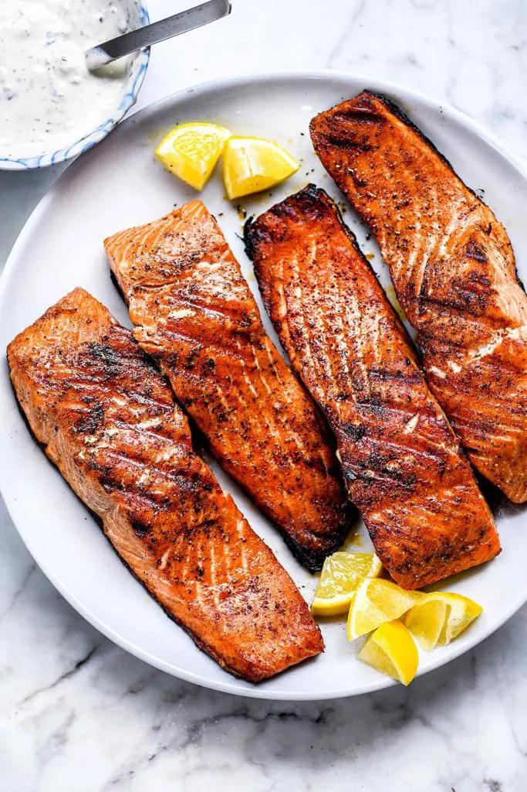

Grilled Salmon

Description
This simple salmon recipe is a delicious, blank canvas for sauces,
toppings, and salsas to serve along with it
Generously coat the flesh side of the salmon with oil and cook it 90% of
the way skin side down until the skin releases easily from the grill,
about 6-8 minutes, before turning to the flesh side for 2-4 more minutes.
Ingredients
- 4 6-8 ounce skin-on salmon fillets about 1-inch thick
- 2 teaspoons kosher salt
- 2 teaspoons freshly ground black pepper
- 1 lemon cut into wedges
- 2 tablespoons grape seed oil
Steps
-
Prepare the grill for direct cooking over high heat, 450°F-550°F. Brush
the cooking grates clean and close the lid to heat.
-
Generously coat the flesh side of the salmon fillets with oil and season
evenly with kosher salt and black pepper. Grill the salmon skin side
down over direct high heat with the lid closed, for about 6-8 minutes or
until the fish lightens in color, becomes more firm to the touch and you
can lift the fillets off the cooking grates without them sticking.
-
Turn the salmon over, close the lid, and cook to 130°F or about 2-4
minutes for medium rare or longer to desired doneness. Transfer to a
platter to rest for 1-2 minutes. Slide the salmon skin from the fillets
and serve with wedges of lemon and tartar or cucumber dill sauce.
back to home